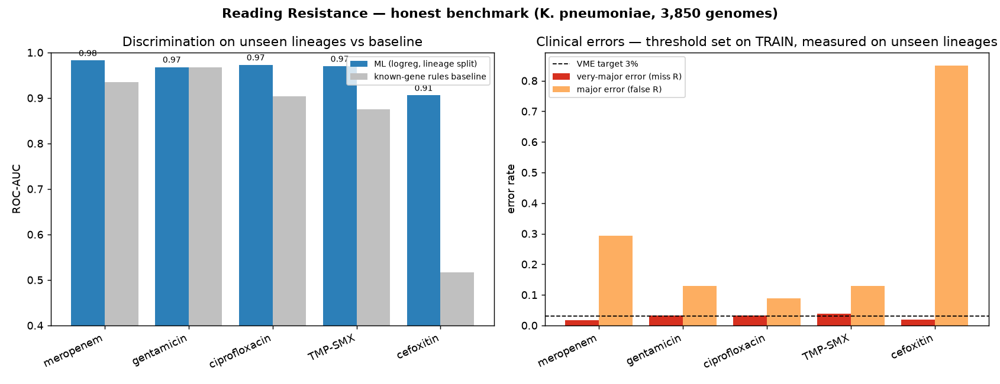

Reading Resistance
K. pneumoniae · E. coli · A. baumannii
S. aureus · P. aeruginosa · Salmonella
E. faecium · S. pneumoniae
36 per-drug models · lineage-held-out
The problem
Predicting resistance from a genome is fast, but two pitfalls separate a credible result from a naive one — and both are central here:
- Population-structure leakage. Bacteria are clonal, so a random train/test split lets the same lineage sit in both — the model memorizes ancestry and every metric inflates.
- The database-lookup trap. If a model just detects a known resistance gene, it is a lookup, not a contribution. The real question is what ML adds over a gene lookup.
Approach
- Phylogeny-aware split. MLST sequence types held out whole — train and test share no lineage (enforced by a unit test).
- Honest rules baseline. Every model is measured against a transparent known-gene classifier.
- Clinical errors first. Very-Major Error (resistant→susceptible, dangerous) and Major Error lead every table, not accuracy.
- One model per antibiotic, calibrated, with abstention.
Data & methods
Data: BV-BRC assembled genomes + laboratory phenotypes only (no computational labels). 3,850 QC-passed K. pneumoniae genomes (+7 more organisms, ~19k genomes total).
Features: AMRFinderPlus determinants — known genes + point mutations (interpretable, mechanism-level). Matrix 3,850 × 688.
Models: rules baseline · logistic regression · XGBoost + isotonic calibration. Threshold tuned to cap VME ≤ 3% on out-of-fold train data.
Stack: Python, scikit-learn, XGBoost, SHAP; bio-tools via bioconda; pinned env, fixed seed, 13 passing tests, one-command Make targets.
Results — unseen lineages, VME ≤ 3%
| Drug | ROC-AUC | VME [95% CI] | Rules AUC | DeLong p |
|---|---|---|---|---|
| ciprofloxacin | 0.983 | 2.3% [1.3–5.1] | 0.911 | 7×10⁻³⁶ |
| TMP-SMX | 0.977 | 2.3% [1.4–3.9] | 0.885 | 9×10⁻⁵¹ |
| meropenem | 0.968 | 1.3% [0.3–3.5] | 0.933 | 5×10⁻²⁴ |
| gentamicin | 0.981 | 1.6% [0.8–2.8] | 0.948 | 1×10⁻³⁰ |
| cefoxitin | 0.905 | 0.7% [0.2–1.7] | 0.518 | ≈0 |
DeLong paired test The model beats the gene-lookup baseline on every drug — significant, not just numerically larger.
The headline: we tested externally, and it got worse
1,143 isolates curated by other groups. Models frozen — no retraining, no re-thresholding. Analysis plan registered before any genome was downloaded.
| Drug | internal | external | vs lookup |
|---|---|---|---|
| meropenem | 0.968 | 0.795 | +0.027 |
| gentamicin | 0.981 | 0.826 | +0.030 |
| ciprofloxacin | 0.983 | 0.835 | +0.065 |
| TMP-SMX | 0.977 | 0.806 | +0.092 |
| cefoxitin | 0.905 | 0.596 | +0.027 |
Survives: beats the gene-lookup on 4/5 drugs externally. Does not: the cefoxitin gap is internal-only, and the VME≤3% operating point does not transfer.
Cefoxitin — the internal result, and why it fell
Internally, resistance is driven by porin loss a gene-lookup cannot see: the AmpC baseline misses 96.3% of resistant strains (1,469 of 1,525), and the model lifts 0.52 → 0.91.
Externally it drops to 0.596 — the drug that leaned most on co-carried MDR markers, while the mechanistic AmpC lookup barely moved (0.518 → 0.569). A mechanism travels; a population-specific correlation does not. We flagged this as a limitation in writing before the test.

Statistical rigor
Leakage, quantified (random vs lineage split)
| Drug | Random | Lineage | ΔAUC |
|---|---|---|---|
| cefoxitin | 0.935 | 0.903 | +0.032 |
| meropenem | 0.978 | 0.968 | +0.010 |
| ciprofloxacin | 0.989 | 0.983 | +0.006 |
Random splits inflate AUC on every drug. The inflation is small because determinant features encode mechanism, not ancestry — unlike k-mer models that lose 0.1–0.2 AUC. The small gap is itself evidence the model learned biology.
FDA/CLSI Bootstrap 95% CIs on VME/ME; benchmarked to VME ≤ 1.5%, ME ≤ 3%, CA ≥ 90%, EA ≥ 90%.
Foundation models, honestly tested
ESM-2 protein LM — adopted. Embedding the actual allele of each resistance protein recovers signal presence/absence discards. On the hardest carbapenems, MIC Essential Agreement rises significantly:
- K. pneumoniae meropenem 68→73% (p=0.0004)
- A. baumannii imipenem 54→61% (p=0.0001)
GNN — tested & rejected. An isolate-similarity graph (AMR-GNN style) gave no gain over a plain MLP on curated-determinant features — the mechanistic signal is already saturated. An honest negative we can explain.

Interpretability ⚕
Global SHAP recovers the correct mechanisms per drug: blaKPC (meropenem), gyrA/parC (ciprofloxacin), ompK36 porin (cefoxitin), aac(3) (gentamicin), sul/dfr (TMP-SMX). Every prediction is auditable via its determinants.

Beyond binary: MIC & abstention
MIC regression predicts the resistance level (CLSI Essential Agreement, ±1 dilution): ciprofloxacin 88.9%, cefoxitin 83.6%.
Conformal prediction gives an empirically-validated per-class coverage level (measured under lineage shift, not assumed) and a defer-to-lab option — confident calls on hard drugs at ~0.3–0.6% VME.
Generalization & demo
The identical pipeline runs on 8 WHO-priority pathogens across the Gram divide — ROC-AUC 0.84–0.998 on unseen lineages (mecA→oxacillin, van→vancomycin, carbapenemases, pbp mosaics), with an organism-aware rules baseline for a fair per-organism comparison.
An 8-organism web app: genome in → per-drug calls + calibrated confidence + determinant drivers + a species-check guard + optional AI clinical narrative (explanation only).
Honest limits & conclusion
- Determinant features only (k-mer signal out of scope by design).
- Strict VME target raises major errors on hard-to-call drugs — a clinical trade-off, shown not hidden.
- Reference-database and sampling bias; ⚕ biological sign-off in progress.
A smaller, honestly-validated result beats a large leaky one. We show what ML adds over a gene lookup — significantly — across eight pathogens, with the errors that matter clinically reported first.